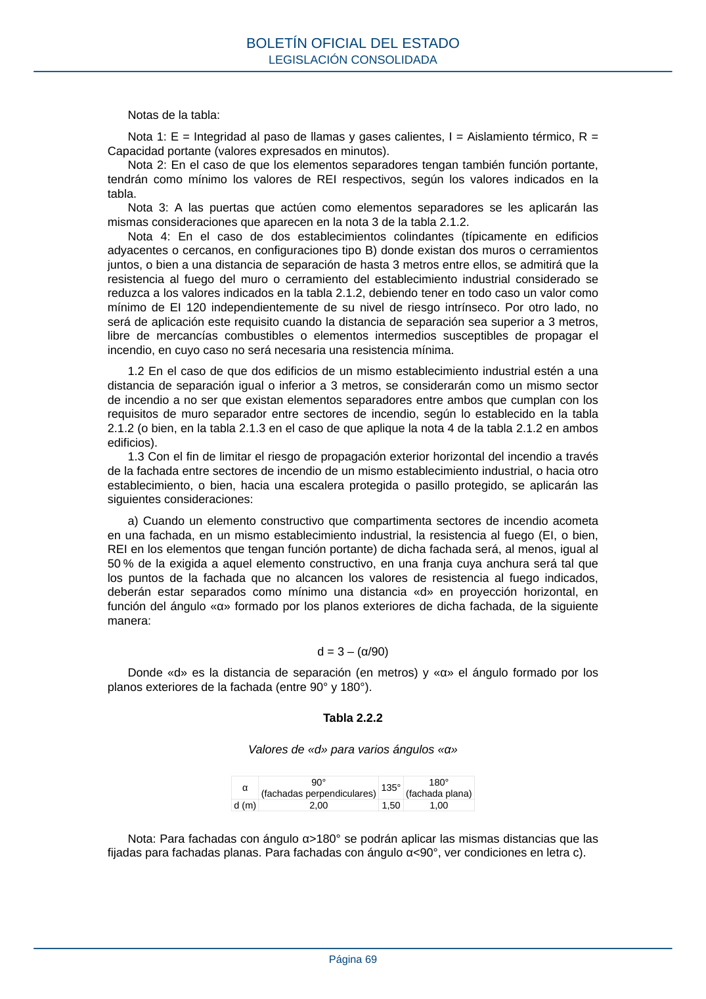

RSCIEI · edición 2025-04-10 · capa asociada
Documento RSCIEI-asociada · SHA-256 del PDF 85aa0af25d51e5b58d8975a4eefbf76d3f57a8933445cfe814ae9c4818a2e3e7
Página física 69 de 108.
Copia fiel del PDF fuente · Fuente oficial
Ficha de la disposición en la fuente oficial
Texto extraído y reorganizado: Basado en datos de la Agencia Estatal Boletín Oficial del Estado. PDF reproducido: Fuente de los datos: Agencia Estatal Boletín Oficial del Estado.
Formato: Texto de la página (Markdown)
Notas de la tabla: Nota 1: E = Integridad al paso de llamas y gases calientes, I = Aislamiento térmico, R = Capacidad portante (valores expresados en minutos). Nota 2: En el caso de que los elementos separadores tengan también función portante, tendrán como mínimo los valores de REI respectivos, según los valores indicados en la tabla. Nota 3: A las puertas que actúen como elementos separadores se les aplicarán las mismas consideraciones que aparecen en la nota 3 de la tabla 2.1.2. Nota 4: En el caso de dos establecimientos colindantes (típicamente en edificios adyacentes o cercanos, en configuraciones tipo B) donde existan dos muros o cerramientos juntos, o bien a una distancia de separación de hasta 3 metros entre ellos, se admitirá que la resistencia al fuego del muro o cerramiento del establecimiento industrial considerado se reduzca a los valores indicados en la tabla 2.1.2, debiendo tener en todo caso un valor como mínimo de EI 120 independientemente de su nivel de riesgo intrínseco. Por otro lado, no será de aplicación este requisito cuando la distancia de separación sea superior a 3 metros, libre de mercancías combustibles o elementos intermedios susceptibles de propagar el incendio, en cuyo caso no será necesaria una resistencia mínima. 1.2 En el caso de que dos edificios de un mismo establecimiento industrial estén a una distancia de separación igual o inferior a 3 metros, se considerarán como un mismo sector de incendio a no ser que existan elementos separadores entre ambos que cumplan con los requisitos de muro separador entre sectores de incendio, según lo establecido en la tabla 2.1.2 (o bien, en la tabla 2.1.3 en el caso de que aplique la nota 4 de la tabla 2.1.2 en ambos edificios). 1.3 Con el fin de limitar el riesgo de propagación exterior horizontal del incendio a través de la fachada entre sectores de incendio de un mismo establecimiento industrial, o hacia otro establecimiento, o bien, hacia una escalera protegida o pasillo protegido, se aplicarán las siguientes consideraciones: a) Cuando un elemento constructivo que compartimenta sectores de incendio acometa en una fachada, en un mismo establecimiento industrial, la resistencia al fuego (EI, o bien, REI en los elementos que tengan función portante) de dicha fachada será, al menos, igual al 50 % de la exigida a aquel elemento constructivo, en una franja cuya anchura será tal que los puntos de la fachada que no alcancen los valores de resistencia al fuego indicados, deberán estar separados como mínimo una distancia «d» en proyección horizontal, en función del ángulo «α» formado por los planos exteriores de dicha fachada, de la siguiente manera: d = 3 – (α/90) Donde «d» es la distancia de separación (en metros) y «α» el ángulo formado por los planos exteriores de la fachada (entre 90° y 180°). Tabla 2.2.2 Valores de «d» para varios ángulos «α» α 90° (fachadas perpendiculares) 135° 180° (fachada plana) d (m) 2,00 1,50 1,00 Nota: Para fachadas con ángulo α>180° se podrán aplicar las mismas distancias que las fijadas para fachadas planas. Para fachadas con ángulo α<90°, ver condiciones en letra c). BOLETÍN OFICIAL DEL ESTADO LEGISLACIÓN CONSOLIDADA Página 69

Datos candidatos: compruebe celdas y notas en el PDF.